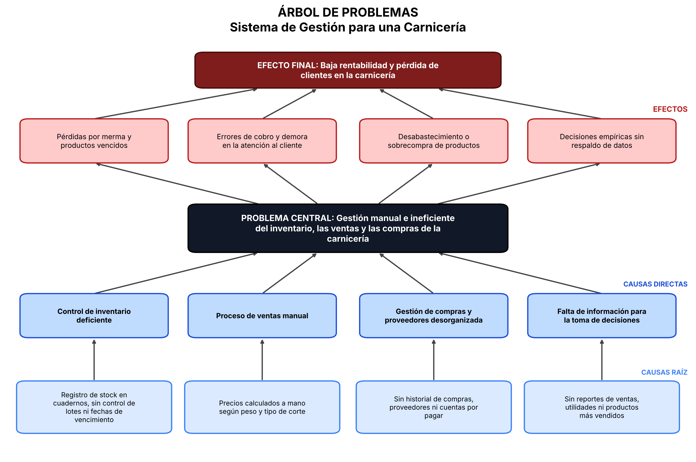
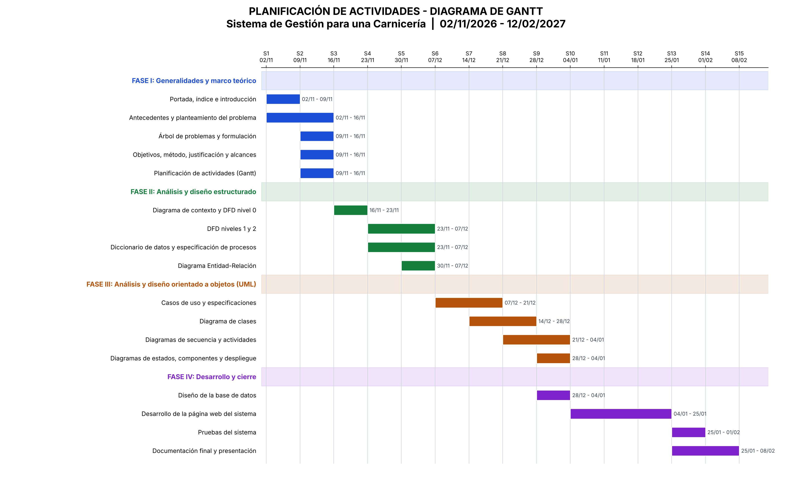

1. Introducción
Las carnicerías son establecimientos comerciales dedicados a la compra, almacenamiento y venta de productos cárnicos. Para desarrollar sus actividades necesitan controlar adecuadamente los productos, las cantidades disponibles, los precios, las ventas, los clientes y los proveedores.
Cuando estas operaciones se realizan mediante anotaciones manuales o registros dispersos, pueden presentarse errores en los cálculos, pérdida de información, dificultades para conocer las existencias y demoras al momento de atender a los clientes.
Por esta razón, el presente proyecto propone el desarrollo de un Sistema de Gestión de una Carnicería, una aplicación web elaborada con HTML, CSS y JavaScript. El sistema permitirá administrar productos, inventario, ventas, clientes y proveedores, además de consultar reportes básicos para apoyar el control del negocio.
El proyecto se desarrollará aplicando el paradigma orientado a objetos, el análisis estructurado y el modelado UML, siguiendo un proceso iterativo e incremental mediante la metodología RUP.
2. Antecedentes
En los pequeños y medianos negocios dedicados a la venta de carne, es habitual que el registro de productos, compras, ventas y existencias se realice en cuadernos, hojas de cálculo o mediante apuntes separados. Este procedimiento puede ser suficiente cuando el volumen de operaciones es reducido, pero se vuelve difícil de mantener cuando aumentan los productos y las transacciones.
La falta de un registro centralizado puede ocasionar diferencias entre las cantidades reales y las anotadas, desconocimiento de los productos con bajo stock, errores al calcular los importes y dificultad para consultar el historial de ventas.
Ante esta situación, se plantea una solución informática sencilla que reúna la información principal del negocio en una sola aplicación y facilite las tareas cotidianas de administración.
Antecedente tecnológico
Las aplicaciones web permiten acceder a funciones de gestión desde un navegador. Para este proyecto se utilizarán tecnologías básicas del desarrollo web: HTML para la estructura, CSS para la presentación y JavaScript para la lógica y las operaciones del sistema. La información se conservará en el navegador mediante almacenamiento local (localStorage), por lo que esta versión será una demostración funcional sin conexión a un servidor ni a una base de datos externa.
3. Planteamiento del problema
La administración de una carnicería requiere mantener información actualizada sobre los productos disponibles, sus precios y cantidades, así como registrar correctamente cada venta y los datos de clientes y proveedores. Sin una herramienta integrada, estas tareas pueden depender de registros manuales que no siempre se actualizan de manera inmediata.
Esta situación puede provocar errores en el registro de ventas, falta de control sobre el inventario, pérdida o duplicación de datos y dificultades para obtener información confiable sobre el funcionamiento del negocio. Como consecuencia, la atención al cliente y la toma de decisiones pueden verse afectadas.
Por ello, se identifica la necesidad de implementar un sistema que organice los datos y apoye los procesos administrativos principales de una carnicería, permitiendo registrar las operaciones y consultar información de forma rápida y ordenada.
4. Árbol de problemas
El árbol de problemas permite representar gráficamente el problema central, sus principales causas y los efectos que puede producir. En este proyecto, las causas se relacionan con el registro manual, el control insuficiente del inventario y la desorganización de la información.

Interpretación del árbol
Problema central: deficiente gestión y control de las operaciones de una carnicería.
Causas principales:
- Registro manual de productos y ventas.
- Falta de control y seguimiento del inventario.
- Errores durante el registro y cálculo de las ventas.
- Información desorganizada de productos, clientes y proveedores.
- Escasa automatización de los procesos administrativos.
Efectos principales:
- Pérdidas económicas por errores en el control de inventario y ventas.
- Desabastecimiento de productos importantes.
- Demoras o dificultades en la atención al cliente.
- Dificultad para tomar decisiones por falta de reportes confiables.
5. Formulación del problema
¿De qué manera el desarrollo de un sistema web de gestión permitirá mejorar el registro y control de productos, inventario, ventas, clientes y proveedores en una carnicería?
6. Propósito del estudio
Objetivo general
Desarrollar un sistema web de gestión para una carnicería que permita organizar y controlar los productos, el inventario, las ventas, los clientes y los proveedores, facilitando el acceso a la información y la generación de reportes básicos.
Objetivos específicos
- Identificar los procesos y necesidades principales de administración de una carnicería.
- Analizar los requerimientos funcionales y no funcionales del sistema.
- Diseñar los procesos y flujos de información mediante herramientas de análisis estructurado.
- Representar la estructura y el comportamiento del sistema mediante diagramas UML.
- Implementar los módulos de productos, inventario, ventas, clientes y proveedores utilizando HTML, CSS y JavaScript.
- Realizar pruebas de funcionamiento para comprobar el registro de datos, los cálculos de ventas y la actualización del inventario.
7. Método, medios e instrumentos de investigación
7.1 Método de investigación
Se utilizará un enfoque descriptivo y aplicado. Será descriptivo porque se identificarán y documentarán las actividades que se realizan en una carnicería; y aplicado porque los resultados del análisis se utilizarán para construir una solución informática que atienda las necesidades identificadas.
7.2 Medios e instrumentos
- Observación: revisión de las actividades habituales de registro de productos, control de existencias y atención de ventas.
- Entrevista: conversación con una persona que conozca el funcionamiento de una carnicería para identificar necesidades y dificultades.
- Revisión documental: análisis de registros, listas de precios, notas de venta y otros documentos que ayuden a comprender los procesos.
- Modelado: elaboración de diagramas de flujo de datos, diccionario de datos y diagramas UML para representar el sistema.
- Pruebas funcionales: ejecución de casos de prueba para verificar que cada módulo responda correctamente.
7.3 Justificación
El sistema se justifica porque permitirá reunir la información del negocio en una aplicación, reducir la dependencia de registros manuales y facilitar la consulta de productos, existencias y ventas. También ayudará a identificar productos con stock bajo y a obtener un resumen de los ingresos registrados.
7.4 Alcances y limitaciones
La versión académica incluirá el registro, consulta, edición y eliminación de productos, clientes y proveedores; la consulta y actualización de inventario; el registro de ventas con cálculo automático del total y descuento de existencias; y reportes básicos.
El sistema se ejecutará en un navegador y almacenará los datos en localStorage. Por tanto, esta versión no contempla usuarios con distintos permisos, sincronización entre varios equipos, facturación fiscal, pagos electrónicos, conexión con lectores de códigos de barras ni una base de datos centralizada. Los datos permanecerán en el navegador y dispositivo donde se utilice la aplicación.
7.5 Metodología de desarrollo: RUP
Para organizar el desarrollo se utilizará RUP (Rational Unified Process), una metodología iterativa e incremental que divide el trabajo en cuatro fases. Cada iteración permite analizar, diseñar, construir y comprobar una parte del sistema, incorporando mejoras progresivamente.
- Inicio Definir el problema, los objetivos, el alcance y la viabilidad del proyecto.
- Elaboración Analizar los requerimientos y preparar los modelos estructurados y UML.
- Construcción Programar los módulos y realizar pruebas de funcionamiento.
- Transición Revisar el sistema completo, corregir errores y preparar su presentación y entrega.
8. Planificación de actividades
La planificación organiza las tareas necesarias para desarrollar el proyecto de forma ordenada. Se propone un cronograma académico de ocho semanas, distribuido de acuerdo con las cuatro fases de RUP. Las semanas son referenciales y pueden ajustarse al calendario establecido por la materia.

Actividades por fase
| Fase RUP | Semanas | Actividades principales | Resultado esperado |
|---|---|---|---|
| Inicio | 1 | Identificación del problema, antecedentes, objetivos y alcance. | Descripción y alcance del proyecto. |
| Elaboración | 2–3 | Levantamiento de requerimientos, análisis estructurado y elaboración de diagramas UML. | Requerimientos y modelos del sistema. |
| Construcción | 4–7 | Diseño de interfaz, programación de módulos, almacenamiento local e integración de funcionalidades. | Aplicación web funcional. |
| Transición | 8 | Pruebas, corrección de errores, documentación y preparación de la presentación. | Versión final y documentación. |
Prácticas de trabajo
- Desarrollar el sistema por módulos para facilitar su revisión.
- Probar cada funcionalidad después de implementarla.
- Revisar y actualizar los diagramas cuando existan cambios en los requerimientos.
- Guardar copias de respaldo de los archivos del proyecto.
- Documentar los avances y los resultados de cada fase.